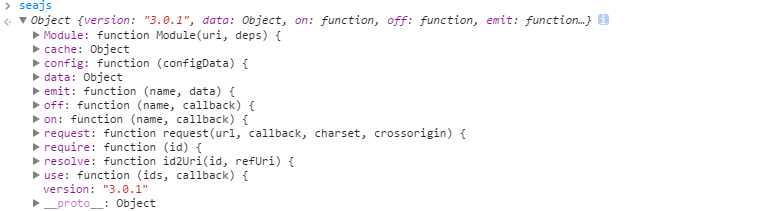

seajs源码分析
{version: "3.0.1"}

//事件模块
var events = data.events = {}
// Bind event
seajs.on = function(name, callback) {
var list = events[name] || (events[name] = [])
list.push(callback)
return seajs
}
// Remove event. If `callback` is undefined, remove all callbacks for the
// event. If `event` and `callback` are both undefined, remove all callbacks
// for all events
seajs.off = function(name, callback) {
// Remove *all* events
if (!(name || callback)) {
events = data.events = {}
return seajs
}
var list = events[name]
if (list) {
if (callback) {
for (var i = list.length - 1; i >= 0; i--) {
if (list[i] === callback) {
list.splice(i, 1)
}
}
}
else {
delete events[name]
}
}
return seajs
}
// Emit event, firing all bound callbacks. Callbacks receive the same
// arguments as `emit` does, apart from the event name
var emit = seajs.emit = function(name, data) {
var list = events[name]
if (list) {
// Copy callback lists to prevent modification
list = list.slice()
// Execute event callbacks, use index because it's the faster.
for(var i = 0, len = list.length; i < len; i++) {
list[i](data)
}
}
return seajs
}
seajs.on("define", function() {
console.log("module define");
})
seajs.on("load", function() {
console.log("module load")
})
seajs.off("load");
seajs.emit("define");
//输出: module define
//seajs源码
var emitData = { uri: uri }
emit("fetch", emitData)
var requestUri = emitData.requestUri || uri
//nocache插件代码
seajs.on("fetch", function(emitData) {
emitData.requestUri = emitData.uri + "?" + new Date().getTime()
})
var DIRNAME_RE = /[^?#]*\// //获取目录
var DOT_RE = /\/\.\//g //去掉/./
var DOUBLE_DOT_RE = /\/[^/]+\/\.\.\// //去掉/../
var MULTI_SLASH_RE = /([^:/])\/+\//g //去掉多个// 非协议://
// Extract the directory portion of a path
// dirname("a/b/c.js?t=123#xx/zz") ==> "a/b/"
// ref: http://jsperf.com/regex-vs-split/2
//获取目录方法
function dirname(path) {
return path.match(DIRNAME_RE)[0]
}
//规范化路径
// Canonicalize a path
// realpath("http://test.com/a//./b/../c") ==> "http://test.com/a/c"
function realpath(path) {
// /a/b/./c/./d ==> /a/b/c/d
path = path.replace(DOT_RE, "/")
/*
@author wh1100717
a//b/c ==> a/b/c
a///b/////c ==> a/b/c
DOUBLE_DOT_RE matches a/b/c//../d path correctly only if replace // with / first
*/
path = path.replace(MULTI_SLASH_RE, "$1/")
// a/b/c/../../d ==> a/b/../d ==> a/d
while (path.match(DOUBLE_DOT_RE)) {
path = path.replace(DOUBLE_DOT_RE, "/")
}
return path
}
// Normalize an id
// normalize("path/to/a") ==> "path/to/a.js"
// NOTICE: substring is faster than negative slice and RegExp
/**
* Normalizes an uri.
* 正常化uri 原因在于在seajs内部require模块时候对于后缀名都是缺省的，正常化的功能就在于此
*/
function normalize(path) {
var last = path.length - 1
var lastC = path.charCodeAt(last)
// If the uri ends with `#`, just return it without '#'
if (lastC === 35 /* "#" */) {
return path.substring(0, last)
}
return (path.substring(last - 2) === ".js" ||
path.indexOf("?") > 0 ||
lastC === 47 /* "/" */) ? path : path + ".js"
}
var PATHS_RE = /^([^/:]+)(\/.+)$/
var VARS_RE = /{([^{]+)}/g
function parseAlias(id) {
var alias = data.alias
return alias && isString(alias[id]) ? alias[id] : id
}
function parsePaths(id) {
var paths = data.paths
var m
if (paths && (m = id.match(PATHS_RE)) && isString(paths[m[1]])) {
id = paths[m[1]] + m[2]
}
return id
}
function parseVars(id) {
var vars = data.vars
if (vars && id.indexOf("{") > -1) {
id = id.replace(VARS_RE, function(m, key) {
return isString(vars[key]) ? vars[key] : m
})
}
return id
}
function parseMap(uri) {
var map = data.map
var ret = uri
if (map) {
for (var i = 0, len = map.length; i < len; i++) {
var rule = map[i]
ret = isFunction(rule) ?
(rule(uri) || uri) :
uri.replace(rule[0], rule[1])
// Only apply the first matched rule
if (ret !== uri) break
}
}
return ret
}
var ABSOLUTE_RE = /^\/\/.|:\//
var ROOT_DIR_RE = /^.*?\/\/.*?\//
function addBase(id, refUri) {
var ret
var first = id.charCodeAt(0)
// Absolute
if (ABSOLUTE_RE.test(id)) {
ret = id
}
// Relative
else if (first === 46 /* "." */) {
ret = (refUri ? dirname(refUri) : data.cwd) + id
}
// Root
else if (first === 47 /* "/" */) {
var m = data.cwd.match(ROOT_DIR_RE)
ret = m ? m[0] + id.substring(1) : id
}
// Top-level
else {
ret = data.base + id
}
// Add default protocol when uri begins with "//"
if (ret.indexOf("//") === 0) {
ret = location.protocol + ret
}
return realpath(ret)
}
function id2Uri(id, refUri) {
if (!id) return ""
id = parseAlias(id)
id = parsePaths(id)
id = parseAlias(id)
id = parseVars(id)
id = parseAlias(id)
id = normalize(id)
id = parseAlias(id)
var uri = addBase(id, refUri)
uri = parseAlias(uri)
uri = parseMap(uri)
return uri
}
// For Developers
seajs.resolve = id2Uri
var doc = document
var head = doc.head || doc.getElementsByTagName("head")[0] || doc.documentElement
var baseElement = head.getElementsByTagName("base")[0]
var currentlyAddingScript
function request(url, callback, charset, crossorigin) {
var node = doc.createElement("script")
if (charset) {
node.charset = charset
}
if (!isUndefined(crossorigin)) {
node.setAttribute("crossorigin", crossorigin)
}
addOnload(node, callback, url)
node.async = true
node.src = url
// For some cache cases in IE 6-8, the script executes IMMEDIATELY after
// the end of the insert execution, so use `currentlyAddingScript` to
// hold current node, for deriving url in `define` call
currentlyAddingScript = node
// ref: #185 & http://dev.jquery.com/ticket/2709
baseElement ?
head.insertBefore(node, baseElement) :
head.appendChild(node)
currentlyAddingScript = null
}
function addOnload(node, callback, url) {
var supportOnload = "onload" in node
if (supportOnload) {
node.onload = onload
node.onerror = function() {
emit("error", { uri: url, node: node })
onload(true)
}
}
else {
node.onreadystatechange = function() {
if (/loaded|complete/.test(node.readyState)) {
onload()
}
}
}
function onload(error) {
// Ensure only run once and handle memory leak in IE
node.onload = node.onerror = node.onreadystatechange = null
// Remove the script to reduce memory leak
if (!data.debug) {
head.removeChild(node)
}
// Dereference the node
node = null
callback(error)
}
}
// For Developers
seajs.request = request
}
var interactiveScript
function getCurrentScript() {
if (currentlyAddingScript) {
return currentlyAddingScript
}
// For IE6-9 browsers, the script onload event may not fire right
// after the script is evaluated. Kris Zyp found that it
// could query the script nodes and the one that is in "interactive"
// mode indicates the current script
// ref: http://goo.gl/JHfFW
if (interactiveScript && interactiveScript.readyState === "interactive") {
return interactiveScript
}
var scripts = head.getElementsByTagName("script")
for (var i = scripts.length - 1; i >= 0; i--) {
var script = scripts[i]
if (script.readyState === "interactive") {
interactiveScript = script
return interactiveScript
}
}
}
var STATUS = Module.STATUS = {
// 1 - The `module.uri` is being fetched
FETCHING: 1,
// 2 - The meta data has been saved to cachedMods
SAVED: 2,
// 3 - The `module.dependencies` are being loaded
LOADING: 3,
// 4 - The module are ready to execute
LOADED: 4,
// 5 - The module is being executed
EXECUTING: 5,
// 6 - The `module.exports` is available
EXECUTED: 6,
// 7 - 404
ERROR: 7
}
function Module(uri, deps) {
this.uri = uri
this.dependencies = deps || []
this.deps = {} // Ref the dependence modules
this.status = 0
this._entry = []
}
//先配置模块基本路径和别名
var basePath = '//img.qcloud.com/qcloud/app/qcconsole_web/dest/';
seajs.config({
base: basePath,
alias: {
'$': 'nmc/lib/jquery-1.10.2',
'util': 'nmc/lib/util',
'net': 'nmc/lib/net',
'event': 'nmc/lib/event',
'reporter': 'nmc/lib/reporter',
.
.
.
.
'startup': 'main/startup'
}
});
if (global.seajs) {
return
}
//seajs版本信息
var seajs = global.seajs = {
// The current version of Sea.js being used
version: "3.0.1"
}
//seajs配置数据
var data = seajs.data = {}
// The root path to use for id2uri parsing
data.base = loaderDir
// The loader directory
data.dir = loaderDir
// The loader's full path
data.loader = loaderPath
// The current working directory
data.cwd = cwd
// The charset for requesting files
data.charset = "utf-8"
// @Retention(RetentionPolicy.SOURCE)
// The CORS options, Do't set CORS on default.
//
//data.crossorigin = undefined
// data.alias - An object containing shorthands of module id
// data.paths - An object containing path shorthands in module id
// data.vars - The {xxx} variables in module id
// data.map - An array containing rules to map module uri
// data.debug - Debug mode. The default value is false
seajs.config = function(configData) {
for (var key in configData) {
var curr = configData[key]
var prev = data[key]
// Merge object config such as alias, vars
if (prev && isObject(prev)) {
for (var k in curr) {
prev[k] = curr[k]
}
}
else {
// Concat array config such as map
if (isArray(prev)) {
curr = prev.concat(curr)
}
// Make sure that `data.base` is an absolute path
else if (key === "base") {
// Make sure end with "/"
if (curr.slice(-1) !== "/") {
curr += "/"
}
curr = addBase(curr)
}
// Set config
data[key] = curr
}
}
emit("config", configData)
return seajs
}
seajs.use('startup', function(app) {
app.startup();
});
seajs.use = function(ids, callback) {
Module.use(ids, callback, data.cwd + "_use_" + cid())
return seajs
}
// Use function is equal to load a anonymous module
Module.use = function (ids, callback, uri) {
var mod = Module.get(uri, isArray(ids) ? ids : [ids])
mod._entry.push(mod) //入口
mod.history = {} //模块依赖
mod.remain = 1 //模块依赖计数
//入口模板依赖全部加载完执行回调
mod.callback = function() {
var exports = []
var uris = mod.resolve()
for (var i = 0, len = uris.length; i < len; i++) {
exports[i] = cachedMods[uris[i]].exec()
}
if (callback) {
callback.apply(global, exports)
}
delete mod.callback
delete mod.history
delete mod.remain
delete mod._entry
}
mod.load()
}
// 通过uri获取模块并缓存
Module.get = function(uri, deps) {
return cachedMods[uri] || (cachedMods[uri] = new Module(uri, deps))
}